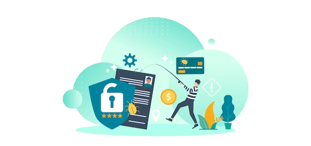
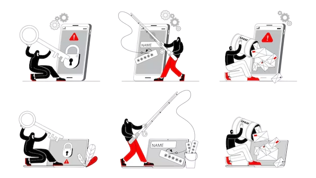

Unlock The Secrets To Total
Phishing Protection!
Phishing attacks are one of the most common forms of cyberattacks, and they have grown in complexity and severity over the years. Phishing attacks aim to steal personal and financial data from unsuspecting victims. With the ever-evolving techniques that malicious actors employ, it is more important than ever to protect yourself from these attacks.
In this blog post, we will discuss the various ways that you can protect yourself from phishing attacks, as well as the common signs of a phishing attempt. We will also discuss how to handle a phishing attempt should one occur. From proper cyber hygiene to understanding the risks of clicking on suspicious links, taking the proper precautions is essential for protecting your data. With the right information and preparation, you can stay one step ahead of phishing attacks and keep your data safe. PhishProtection is prepared to lend a supporting hand in this case.
What is phishing and how does it work?

When an individual is tricked into divulging sensitive information (usernames, passwords, and other banking details) by pretending to be a trusted source, that action is called phishing.
Another technique of more personalized targeting utilizes three vulnerabilities in an individual.
- The apparent source appears to be a known and trusted individual
- The message contains information supporting its validity
- The request seems to have a logical basis:
Phishing emails usually try to entice their recipients into performing one of the two following: a) releasing sensitive or valuable information; or b) downloading malware. There are many varieties of phishing, each having the potential to disrupt an organization.
How to avoid phishing scams
On a managerial level, the Federal Trade Commission can help by providing a helpful review and tips for avoiding phishing.
- Something a user has like a passcode you get via text message or an authentication app.
- Something a user is like a scan of a fingerprint, a retina, or their face.
Multi-factor authentication makes it more challenging for fraudsters to get in if they do acquire a password and username.
- Protect all computers in the organization by using security software: Set the antivirus software to update automatically so it's updated to deal with any new security threats.
- Protect all mobile phones and tablets by instituting a mandatory update policy on devices that access your network: These updates could be critical protection against potential threats.
- Protect your accounts by using multi-factor authentication: Some accounts require additional security by requiring two or more authentication codes prior to access to an account. This is known as multi-factor authentication. The additional codes needed to log in to your account fall into two different categories:
- Protect your data by backing it up: Back up data to make sure that those backups are separate from your computer, such as copying files from an external hard drive or cloud storage. Backup data on your phone, as well.

When an individual is tricked into divulging sensitive information (usernames, passwords, and other banking details) by pretending to be a trusted source, that action is called phishing.
These precautionary measures are critical when it comes to safeguarding your company and yourself against cybercriminal activities.
- Do not trust any source that asks you for sensitive information via email.
- Is the email professionally written? Misspelled and grammatical mistakes are indications of a phishing scheme.
- Never trust a source that does not know who your login credentials are. A bogus greeting is a sign that it's a pump-and-dump scheme.
- Content that alerts you to possible security threats, including words like "Verify your account" or "Backup now!" in an email you wouldn't be expecting to receive, may indicate a phishing attack.
- Does the email contain attachments? If it is an unsolicited approach and the corresponding email attachment is questionable, it could possibly be a scam.
- Is the email from a legitimate domain? If the @domain.com part of the email doesn't exactly match the web site address for the authentic organization, it's likely a scam.
- Make sure the site is secure – does the URL begin with “https”? When you mouse over the link is there a closed lock icon near the address bar?
- Is your browser up to date? Companies release patches for newly detected malware all the time, so let their developers do the hard work for you.
Ultimately, learning to recognize phishing attacks is the best way to protect yourself from becoming a victim of a cyber attack. Be sure to stay vigilant, update your security software, and be aware of any suspicious or unfamiliar emails that come your way. With the right tools and knowledge, you can protect yourself from any phishing attacks and safeguard your personal information.